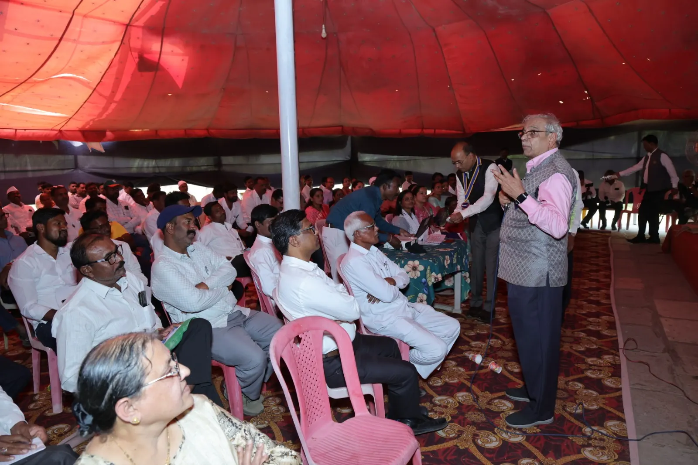

Saurabh Somani
Director
Responsibility: strategy, operations and the digital platforms that connect members, NPOs and partners to the mission.
LinkedIn

How we began, what we stand for, and the people who carry our work: by law, by advice and by heart.

Before Zero Cube existed, our founders spent 2025-26 working with Rotary District 3131’s Environment Team. They worked with clubs and a Gram Panchayat, planted trees, and helped them on their Net Zero journey.
That work led to 34 Net Zero certificates: 1 Gram Panchayat and 33 clubs. It also showed us something simple: people want to act, but they need clear rules, honest proof and someone to walk with them.
Founders' track record: 34 Net Zero certificates (1 Gram Panchayat, 33 clubs) issued in 2025-26 in association with Rotary District 3131's Environment Team, before Zero Cube was incorporated on 28 September 2026. They are not Zero Cube certificates, and no current partnership or MoU with Rotary is implied.
What if every school, village and small business could measure its carbon, cut it, and prove it, with open rules anyone can read?
What if company CSR money could reach villages, with proof of what really changed on the ground?
What if every child got the same good education, on a planet that can sustain them?
Those questions became Zero Cube. On 28 September 2026 we were incorporated in Pune as a not-for-profit company under Section 8 of the Companies Act, 2013. From the people, for the people.
Two equal goals: a cleaner planet, and a good education for every child, unconditionally.
A world where every child gets the same school foundation, teachers who shape responsible global citizens, and a society that helps them grow toward their own dream; and where NetZero villages and a green economy create dignified work for all.
To design and steward open frameworks for climate action (Net Zero, ESG and SROI) and for quality and equal education, with certification programmes and CSR delivery models that turn them into lasting change at community scale.
Open, published rules for Net Zero, ESG, social value and school quality.
We check, guide and certify schools, villages, businesses, NPOs and people under our own published rules.
CSR and sponsors fund the work. Villages never pay. Green work creates local jobs.
Every child, no conditions, learning climate responsibility along the way.
From the people, for the people.
Our directors carry the company’s legal duties under the Companies Act, 2013. No ranks among us, only responsibilities; the Board holds the statutory ones.
Director
Responsibility: strategy, operations and the digital platforms that connect members, NPOs and partners to the mission.
LinkedInDirector
Responsibility: environmental engineering, water and sanitation expertise, opening doors to networks, and the Green Week Mission.
LinkedInOur directors serve without remuneration and do not fund the company: no director loans or guarantees. CS/CA to confirm
Who the company belongs to, in law.
Zero Cube has no shares and no shareholders. Nobody owns it for profit. Its members are the subscribers to its Memorandum of Association; others may be admitted only as its Articles allow. CS/CA to confirm
People and organisations who join our membership programme are participants and supporters. They are not members of the company, and get no shares, ownership, voting or profit rights.
Experts who guide our frameworks, audits and field work. More advisors may join.
Non-statutory and advisory only. Advisors are not directors of the company and hold no management role. They share expertise; the Board decides.
Former City Engineer, Navi Mumbai Municipal Corporation (NMMC)
A civil and municipal engineer, he served as City Engineer of the Navi Mumbai Municipal Corporation. There he oversaw green urban infrastructure, water supply networks and public works across the city’s nodes, working closely with municipal authorities and standing committees. Since retiring, he advises on urban development and environmental infrastructure, sharing his expertise for the good of society.
Founder and Director, Eco Solutions
A green architecture and sustainability expert with over two decades of experience in green design, sustainability reporting and low-carbon construction. He makes the case that sustainable buildings can cost no more, or even save money. He has written many white papers, has earned international recognition, and is active with bodies such as NAREDCO MAHI, ISHRAE and IGBC, spreading green building awareness and ESG readiness among companies.
Eco Solutions ↗Director, Center for Environment Sustainability Governance (ESG), St. Vincent Pallotti College of Engineering & Technology
An environmental engineer with decades of experience, he was a Senior Scientist and Head of Division at CSIR-NEERI. He is known for pioneering work in national environmental auditing, industrial pollution control and ways to make the best use of resources. Today he leads the Center for ESG at St. Vincent Pallotti College of Engineering & Technology.
Founding Director and CEO, Enpro Envirotech Pty Ltd, Australia
An environmental management expert with a PhD in Microbiology from Nagpur University and over three decades of experience in resource recovery, anaerobic digestion, biogas and cutting carbon footprints. He pioneered fast thermophilic composting systems for organic and food waste, such as FOODIE. He has worked with academic institutions, research centres and companies around the world on practical circular economy solutions.
Our advisors guide and advise us. They do not certify, verify or endorse any Zero Cube certificate. The organisations named are their own roles, not partners of Zero Cube.
Experienced professional or student, from anywhere in the world: there is a role for you.
Practitioners in Scope 3 and carbon accounting, remote sensing and dMRV, and rural development who help deliver assessments, training and village programmes.
Students who carry the movement to their campuses: campus chapters, webinar crews and field data work.
Experts who share our purpose can offer guidance. Each advisor signs a conflict-of-interest declaration and is named only with written consent.
People with open responsibilities are named here only with their written consent.
What the law asks of us, and what we promise you.
CS/CA to confirm
Our first audited financial statements and annual return will be published here after our first AGM and filing with the Registrar of Companies. CS/CA to confirm
Pick one simple step.